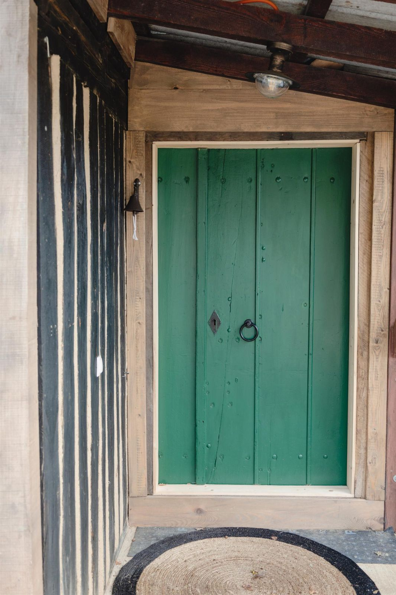
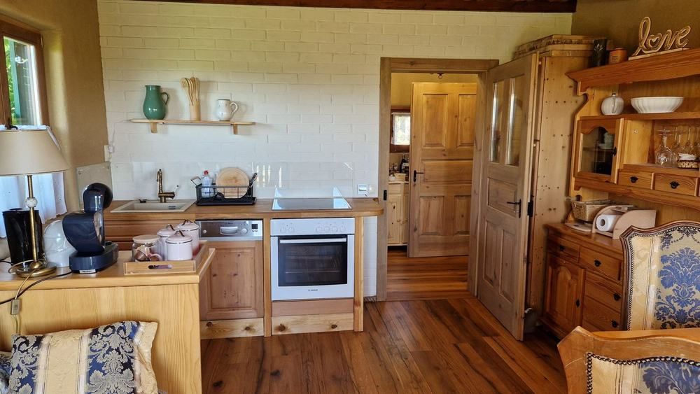
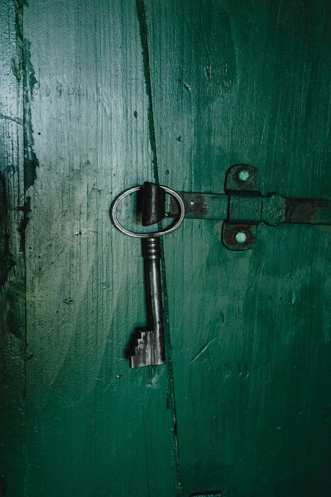

Avtentičnost nastanitve
Avtentičnost nastanitve
Posebnost hiške Clavis je v avtentičnosti, ki zrcali preteklost prekmurske pokrajine.
Zgodba hiške
Med vinogradi, z razgledom na Panonsko nižino
Hiška Clavis se nahaja med vinogradi s širokim razgledom na Panonsko nižino. Je obnovljena, vendar je ohranjena prvotna lesena konstrukcija sten in stropov.
Pri obnovi smo uporabljali naravne materiale. Hrastovi stari podi, lesena okna in vrata, kakor tudi oprema iz polnega lesa, vam bodo pričarala občutek naravnosti in brezčasja.

Materiali in izdelava
Les, trstika in glina
Les
Prvotna lesena konstrukcija sten in stropov je ohranjena. Podi so stari hrastovi, okna in vrata lesena, oprema iz polnega lesa.
Trstika in glina
Notranje stene so dobile izolacijo iz trstike, za omet pa se je uporabila glina, pomešana s slamo.
Oprema
Postelje so iz akacijevih hlodov. Kavč v dnevni sobi in stoli za veliko masivno mizo so obnovljeni in prevlečeni s posebno izbranim materialom in vzorcem. Luči so stilske.




Vhodna vrata in ključ
Ključ, kakršnega niste vajeni
Vhodna vrata so avtentična, stara več kot 100 let, zato sta tudi ključavnica in ključ takšna, kot ju najbrž niste vajeni.
Moto podjetja: vam omogočamo in v roke dajemo ključ (lat. Clavis), sami pa poskrbite, da boste si odprli vrata v vaš raj.
Skrb za hiško
Naravni materiali zahtevajo skrb
Ker so stene glinene, pod pa lesen, je potrebna posebna skrb in previdnost, da hiško lahko še naprej delimo z vami in drugimi gosti. Stavba je v celoti lesena in iz naravnih materialov, zato je požarna ogroženost visoka; v hiški je gasilni aparat, kajenje v njej pa je prepovedano.